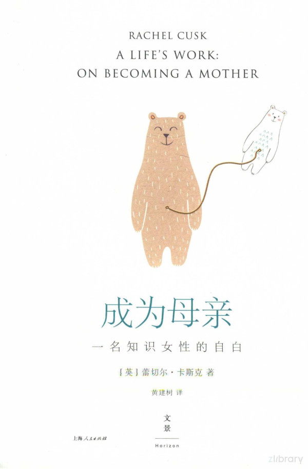

|  |
成为母亲：一名知识女性的自白 |
序章
我之所以说这么多，是因为我悲观地认为，一本讨论母性的书只能吸引其他母亲；即使是母亲，也只能吸引像我这样的，她们觉得做母亲的经历非常重要，以致阅读相关读物能给人某种奇怪的慰藉。我提及“其他母亲”和“只能”等字眼，仿佛充满了歉意：因为几乎无法对外界解释做母亲的体验。做母亲时，女性放弃了自己的公众价值，以换取一系列私人意义。如同某些人耳听不见的声音一样，别人很难识别这种私人意义。若换个角度去聆听，也许我们能听到那些声音。“这星球上的所有人都为女人所生，”美国诗人及女性主义者艾德丽安·里奇写道，“所有男女共同拥有的一段不可否认的经历，即我们在某个女性身体中长达数月的成长期……我们大多数人从女人的角度首次了解爱与失望，刚与柔为何物。这一经历在我们身上打下烙印，它将伴随我们一生，甚至持续到我们弥留之际。”
可依我看，孩子以及谁去照顾孩子这两个话题已同政治有了密切联系；所以，写一本讨论母性的书，却不对我如何能抽出空来写这本书略作说明，此举也许有些自相矛盾。艾伯丁出生的头六个月，我在家照顾她，我的伴侣则继续上班。这段经历很有说服力，它向我揭示了之前我从未认真考虑过的一件事：孩子出生后，他/她母亲和父亲的生活轨迹便不同了；两人之前地位基本平等，如今却处在了某种彻底敌对的关系之中。在家照顾孩子和在办公室上班的一天截然不同。不论它们各自有何利弊，这两种生活都有着天壤之别。在我看来，孩子父亲和母亲的生活从最开始便相互对立，此后，男性的统治地位必然愈发牢固：父亲逐渐得到了外界、金钱、权威和名望的保护，而母亲的职权范围则扩展到整个家庭领域。众所周知，若夫妇双方均有全职工作，母亲一方通常要承担的繁重家务和照顾孩子的责任远超她们应做的份额，因此，她们必须减少自己的工作时间，以应对孩子会出现的紧急情况。此议题事关性别政治，但哪怕是在最开明的家庭—我承认我家便是如此—育儿者和工作者之间也存在一道鸿沟。跨越这条鸿沟异常困难。对父亲来说，一种对策是自己待在家而让母亲去工作：在我们的文化中，男性与女性差别如此巨大，并深受保守主义影响，因此也许男人们在照顾孩子时并不觉得自己是伴侣的仆从。然而，几乎没有男性会容忍这种安排可能会给自己事业带来的坏处；言下之意是，能够容忍这一点的男性比大多数同胞更加致力于性别平等，这让他们冒着颜面扫地的风险，同样的风险也让女性做全职母亲的前景黯淡。父母双方也可以雇奶妈或保育员，然后都去工作，有时候也可以各自减少每周的工作时间，某几天在家带孩子，另外几天去上班。若两人中有一人在家办公，这种模式便会更难操作，尽管人们普遍认为如果有了孩子，像我这样的职业可谓“理想职业”。在家工作的那位在家务活分配上难免会遭到不公正待遇。他们的角色开始类似于空中交通管制员的角色。
就我而言，我们决定一起推翻传统的家庭文化。别人对此的反应有惊讶，有赞许，也有恐慌。比起简单的不走寻常路，这种最具惩罚性、最不可行的家庭生活模式似乎少有人评论，也少有人关注。我的伴侣辞掉了工作，我们迁出了伦敦。人们开始打听起他的情况来，仿佛他身患重病或已经过世。他们热切地问我，他要做什么呀？在我这儿得不到答案，他们便直接问他。在蕾切尔写她那本讨论照顾孩子的书的时候照顾孩子，他如是回答。似乎没人觉得这个回答特别滑稽。
我试图在本书中探讨上述话题中的一部分，旨在回答一个重要问题：女人转变为母亲意味着什么。我对女人和母亲的定义一直很模糊，可定义的过程持续让我着迷。这过程一直都是如此，我并不怀疑这一点，可在我看来，这其中的心路历程对我们而言，要远比我们母辈所经历的漫长。生孩子和做母亲如同铸造性别不平等的铁砧，在我们的社会，女性的责任、期待及经历类似男性，所以她们可以理直气壮地感到恐惧。女性变了，可她们的生理条件一直未改变。同样地，母性虽为我们的性别史打开了一扇特别的窗，可窗玻璃极易碎。我一直惊讶于这样一个事实：人类的每一位成员都会经历从出生到独立异常艰辛的过程，而这一过程必须征用某个女人的生命，这正是我试着去描述的内容。
四十周
助产士给了我一些信息，可都是些特定类型的信息：是我预计会遭遇的一些事，但不涉及她和其他人准备如何应对这些事。她让我一两个月以后再来。我原以为我至少能得到一些针对怀孕的专业知识，以缓解我的恐惧。怀孕期间我到底该怎么办？看到我那张苦恼的脸，她推荐了一两本也许能读一读的怀孕方面的书。我去买了那些书，然后回了家。孕期持续两百六十六天，四十周，九个月，或三个学期—取决于计数方法。医学界按周计。对公众来说，别人的孕期和日常生活没什么两样，所以他们按月份计。我不知道谁会按学期计，老师们也许会这么做，或是生第五个孩子的女性。只有那些饱受痛苦、含冤入狱，以及心碎之人才会按天计数。我焦躁地从一种计数法换到另一种计数法，不过我的怀孕故事最好还是按学期来详述。第一学期以呕吐和疲惫为特色，第二学期则是大肚子和幸福感，在第三学期，你也许会有如下体验：脸变浮肿、腕关节和膝盖肿胀、血管静脉曲张、痔疮、长期胃灼热、便秘、手脚不便、健忘、疲乏、惧怕生孩子、渴望孕期结束。
我注意到，这些书里没有提及准妈妈们最开始如何了解宝宝出生的方式，此乃孕期的一大特色。书中有足够多的描述这一事件的插图：这些插图通常以一系列截面图的形式呈现，第一幅展示宝宝在妈妈的肚子里，最后一幅则展示宝宝从妈妈的肚子里出来。我开始怀疑，这段经历类似于你从大型喷气式客机的乘客里被选中要求自行驾驶飞机，并使之降落。书中偶尔会出现一些束手无策的女性的照片和形象，仿佛正处于死亡的瞬间：她们愁眉苦脸、大汗淋漓、苦苦哀求，双眼或紧闭，或望向天空，她们的身体淹没于一堆床单和医院的管线中，或因疼痛直立起来，张开手臂，摆出十字形的姿势。这些照片仿佛正展示着某段秘密的女性历史，一个被秘藏起来的关于痛苦的故事。可是，哪怕这些图片如此坦诚，似乎依然无法参透分娩的秘密。书中的说明文字写道：很多女性发现，若采取直立的姿势，生孩子会更容易，抑或宝宝出生的那一刻会感到隽永、宁静。
谈到自己生孩子的经历时，我母亲总是异常坦率。她说，时机一到，无论她们给你什么药，全都吃掉。我也从其他女性那里得到过让我感到不安的线索，她们一提到“痛”这个字，便一边发出疲惫的笑声，一边大声说话；有的则故作神秘地说：事后你就变了个人似的。从没有人解释这些线索；突然间，似乎一切都变得非常安静，仿佛有人无意中违背了某种沉默的誓言。我决定，一旦生了孩子，我将抓住一切机会来传播这些经历；私底下我从未遇到过这种追求真相之人，在我的生命历程中，我也从没听说或读到直接描述这种最普遍存在的事件的内容，这一事实表明，另外还有一些可怕的事物，它与这个谜有着密切联系：不知何故，在这些煎熬的时刻，我们身上某种基本成分被拿走，于是事后虽然样貌与声音大致与之前一样，但那时的我们其实只是一个幻象，被洗了脑，无法为真相作证。电影《天外魔花》的某个场景让我有类似感受，当时，两个尚未被外星人控制的角色中的一个透露说他事实上已被外星人控制。电影的结尾处给了那个男性角色的女朋友的脸部一个特写，她脸上写满了恐惧，因为她意识到自己如今独处于一个满是机器人的世界。
回家的路上，我看着那张纸。可以模糊看见那个小生命的侧影，它斜躺在阴影中，脑袋像是聪明的泡状物，依附在宛如灰白色键盘的脊柱上。医院还给了我一堆小册子，它们涉及膳食、针灸、瑜伽、产前培训班、父母培训班、催眠术以及水中分娩等内容，这些册子里的信息我全都不陌生；要知道，现代怀孕受控于某种宣传方式、标志及语言都属于同一种类的体制，令人惊叹。就纪律严明而论，任何朝鲜啦啦队都无法与英语世界的怀孕女性相媲美。我渴望收到某种诡计的暗号，也渴望收到反抗的秘密信息。我的性别已然成为一个精心布置、很早前便已布下的微型陷阱，我无意间走入其中，如今已经无法逃离。我身上仿佛被怀孕打上了电子标签。我带有女人味儿的一举一动正受到密切监控。
我想到了那些我认识的有小孩的女人，在评论生孩子时，她们都没说生孩子几乎和她们预料中的那样糟糕。大多数人似乎无法谈论这一话题，只有一个女人告诉我，她曾一度求助产士开枪打死自己。
有关怀孕的书提到这个转型或升华阶段时，描述详尽到了让人感到不安的地步。这些书给了你一个清单，列出需要吃的食物，搭配这些食物的食谱，偶尔还给出了食物的成品照，并配有沙拉或盛穆兹利用的碗等说明。借助图示，它们告诉你该如何爬上床、如何躺在床上以及如何起床，然后再次借助图示，告诉你该如何做爱。书里也包含详尽的对话，涉及分娩在即和即将为人父母这类话题，都是些你很可能会跟另一半谈起的内容。如果愿意，你们可以边喝鸡尾酒边谈这些话题；当然，你只能喝不含酒精的那种！若要查询不含酒精的鸡尾酒的做法，请翻阅第73页。有一部分内容谈到产检，并建议产检时带一本书或杂志，甚至是针线活，以防必须等一阵子的情况。做超声波检查时，请留足时间以便找到正确的医院科室。找到科室后，请在叫到你名字后进入检查室。操控员操纵扫描仪器时，请脱掉衣服，躺在诊床上。请在身体变得过于笨重之前采购婴儿服。请装饰宝宝房，最好用无铅涂料，颜色以三原色为佳。在夜里，若你睡不着觉，脑子转个不停，请努力平定这一身份暴动，并利用这段时间与宝宝建立联系。因为饱受失眠之苦，我听从了最后这条建议，可不论我怎么同宝宝沟通，结果总是我毫无尊严地去求宝宝别伤害我。肚子越来越大，我意识到，与宝宝取得联系，其效果无异于是一块田地和一条穿过其中的在建高速公路取得联系。
在怀孕文化中，宝宝扮演了不同寻常的角色。它既是受害者，也是独裁者。这种生物注定只存在于其出生的那一完美时刻；此后，这个生物退化，衰败，变成罪孽深重的凡夫俗子，哭着返回了现实王国。但是，在怀孕时，它可谓一个奇观、奇迹和补偿。有关怀孕的作品详述了它每周的成长情况，包括宝宝慢慢长出小小的手指和脚趾，完美的小指甲，以及那双没有眼睑的无辜的大眼睛。人们积极地试着同这种生物交流。大多数书籍认为在怀孕的第14周，你便可以感受到宝宝在活动，它微微地颤动着，就像蝴蝶的翅膀（某本观点更为激进而因此略显过时的书告诉我，这只是风：一个月之后，才能感觉到宝宝真的在动。该书愉快地补充道，别担心摔倒，也别担心交通事故或从楼梯上摔下来。只有重物直接砸到肚子上的强力冲击才会伤到宝宝）。17周的时候，宝宝有了听力。它能听见你，妈妈的声音！我感觉到，宝宝有充足的时间去忘怀并厌烦这一变化。我还学到，宝宝很活跃时，我应该用双手缓缓抚摸肚子，然后对着宝宝说话或唱歌。宝宝会安静下来。你安抚了宝宝。
我注意到，这样一种孤独、完美且怪异的人造母性，无法推荐给已有小孩的女性，这不仅仅是因为她们没那么容易受骗。在一本书里，我发现书中有一部分专门是给这些不幸者的，名为“再度怀孕”。那部分非常短，其中提到一旦你告诉别人自己怀了二胎或再次怀孕时他们的反应。什么，又怀了？他们也许会问；或者问，你还没生够吗？你会感到身心俱疲。上次怀孕时你的身体已被掏空，它将变得松垮与臃肿。孩子会把精心准备的菜肴扔到地上，一下倒掉装满玩具的盒子，跟你把玩具放回盒子里一样快，还会在夜里尖叫着醒来好几次；所以你不停地收拾、清洗，也许无暇思索自己这次怀孕的事。你也许觉得自己可能无法给新生的宝宝多一些关爱。你也许靠汉堡与薯条为生。你也许很担心自己和另一半的关系，担心钱，也担心自己是否需要更大的房子。但至少这次分娩不会那么痛苦，因为上次分娩后，你所有的肌肉早就扭曲得走了样。
我给医院打电话，想预约产前课程。别人告诉我，太晚了，名额已满。你该早些预约。那时候我又没怀孕，我回答道。我发现自己进入了一个强迫人们必须有远见的世界，在那里，与我同处在一个怀孕阶段的女人正在心仪的学校给自己尚未出生的孩子做入学登记。我突然感到一阵恐慌，觉得自己落在了别人之后，还没准备好，只得饱受痛苦，好比一个赤手空拳的人被丢进满是野兽的丛林。我又打了好几个电话，终于发现某个郊区的社区活动中心正开设孕妇瑜伽课。我去那里上课，和另外六七位怀孕女人在地上围坐在一起。老师盘腿坐在我们中间。之前我从未体验过同类聚会。我们看起来像是被囚禁在自己的肚子里，就像铁栏里服刑的人，也像需要帮助的人。看到我们的这些相似之处，我着实感到安心和平静。我想知道为何自己曾嘲笑并抗拒它。瑜伽老师给我们分享她自己生孩子的经历。这很符合瑜伽的特质，也很正面。她告诉我们她曾在某一时刻受到启迪，当时她意识到，怀孕的女人只需要别人善待她们；考虑到善人太少，解决方式就是怀孕的女人善待彼此。她告诉我们，所以我们才会在这里，为了彼此！老师朝上方舒展双臂，兴高采烈地大笑起来。我们在她的指导下深呼吸。我们变换着姿势。有几度含糊地提到生孩子。我们靠在墙上，运动腿部。有个女孩在劈叉。这时候，老师让我们找个搭档。这一指令浇灭了我的热情。我不想和谁搭档。事实上，我想尽快回家。可我还是一言不发地找了个伴，或者说有人挑中了我。看样子，我们要给彼此做按摩。这就是所谓的善待他人。老师让我们分成两组，一组是按摩师，另一组接受按摩。我是接受按摩者。我的搭档是一个有着柔软卷曲的白发，皮肤晒得黝黑，还打了鼻环的女孩；我不记得她的名字了，她正在给我按摩。我闭上眼，身体如钢一般僵硬。老师轻言细语地给指令，仿佛隔壁有人在睡觉。我离开自己的肉体，决心放飞自我到别处，另一方面，紧张感也如潮水般袭来。过了很久后，按摩才停止。我尴尬地看了看那女孩的眼睛，笑了起来。我怀着专业的热情，开始了按摩。那女孩的皮肤很陌生，只归她个人所有；我虽想温柔一些，但还是带着侵犯她的觉悟干脆利落地给她按摩。按摩过后，上了一些巧克力饼干和茶。我借故离开。在门口，我回头看了一眼，看见那些女人全都拿着马克杯围坐在一起，她们的侧影让人觉得她们既生命力旺盛，又很脆弱。她们的话都不多。我觉得自己像个男人，受困于始乱终弃这种可耻行为。
冬天来了。我常对自己的处境感到持续不断的绝望。早上起床时，我观察起小山似不断隆起的腹部，又与来势汹汹的严重的幽闭恐惧症做斗争。孕期还要持续很多周，我孤立无援，觉得愈发不像自己，以后也都会如此。让我恼火的，不只是禁欲—没了向诱惑低头的可能性，我被剥夺了很多乐趣；也不是我身体的极端变化，不是随之而来的奇怪疼痛，不是像活鱼一样在我肚子里挣扎翻腾的不真实的生命，也不是我的无力感，或是别人眼里以及设想中的脆弱（在公交站，一个没了双臂的年轻男子从我身边走过，他辛酸地说道，别担心，宝宝不会像我这样。我想追上他，像收回自己的合理财产那样收回我刚才看他的那种眼神，不管他觉得那眼神到底意味着什么。我想说，就算宝宝像你那样，我也不在乎，我不是那种人，我只是想摆脱它）。我发现，难以忍受的，其实是我的隐私为大众所知，仿佛我家的门敞开着，陌生人在屋里翻来查去。又仿佛我被逮捕或被要求交代情况，被税务稽查员召唤，被隔离，被搜身。我不再自在地生活，而是处在某种奇异的奉献中。怀孕的这几个月里，我放弃了独处的状态，变成了一座桥，一条连接线，一种媒介。我看报发现美国的一些女子因为伤害自己的胎儿而受到起诉，我很好奇，怎么会这样呢？身体怎么就变成了像电话亭那样的公共空间呢？又怎么会违法地做出自残这种行为呢？我害怕权威，也害怕服从，正是这类故事刺痛了这种害怕。我这人总是畏惧被人发现和揭发我的短处。现在，仿佛有个间谍就安插在我身体里，受到他的监视，我觉得既愧疚又不自在。我确信，给人压力、让人感到警惕的并非宝宝，而是宝宝对于他人的意义，或是这个世界的主人翁意识，它总把对事物的所有权挂在嘴边。
然后，事情突然间有了变化。如今已是2月，白日短暂而黯淡，夜晚则如同湖泊般深邃和漆黑。年关之门的铰链嘎吱作响：很快便要打开，让春天的光芒照射进来。我等待着这束光，就像等待着让我做好准备的信号，可它从未来临。离预产期还有一个月时，我开始出血。我将此事汇报给助产士，她不顾我的抗议，带我去了医院。一进医院我就被带到了超声波检查室。我俯卧着，一群人聚集在我身旁。屏幕上再次出现了雪花般的图像。超声科医生探身向前，敲打着键盘，仔细检查起来。真是不可思议。她直截了当地宣告结果。会诊医生也探身向前。他们仔细看着屏幕，摆出了难以置信的手势。全都是错的，超声科医生说。胎盘完全堵住了子宫颈。宝宝出不来的，看见没？她告诉我。我顺从且聚精会神地看起屏幕来，然后看见一个黑乎乎、打着旋，类似于外太空存在的东西。有人在愤怒地低声说话，声音越说越大。本该早点发现的。眼下这情况威胁到了胎儿的性命。他们告诉我，如果我继续按计划在家生孩子，我俩可能都会死掉。他们讨论的时候，我看着屏幕。超声科医生手里拿着扫描设备，她这会儿有些心不在焉，于是扫描仪稍微挪动了一下；突然间，黑暗中出现了宝宝那张熟睡的脸。那张脸占据了屏幕，月亮般苍白而宁静，幽灵般虚无缥缈。这是一张人脸，它很真实，并非想象；它徘徊着，渐行渐近，等待着在世上立足。其他人都没注意到这张脸。超声科医生拿着扫描设备挥了挥手，宝宝的脸就消失了。
我被告知现在必须待在医院。我很抗拒，也很绝望，于是自作主张离开医院回了家。第二天，我回了医院，并向院方屈服。那是个周日的晚上。医院里漆黑一片，有些荒芜，仿佛患者只在工作时间光临医院。一位积极过了头，热衷于练习扎针的实习医生如饥似渴地向我扑了过来。她主动要给我验血，并使用插管，不过我都拒绝了。她很愤怒，但还是保持安静；她消失了一会儿，回来时还带了帮手。据她解释，我必须走这些流程。我争辩了一会儿，最终同意只验血。实习医生把针扎进我的胳膊，仿佛她正在参加飞镖冠军赛。然后她又把针扎进我另一只胳膊。血渗到皮肤下面，在我胳膊上形成了两个胎记似的大红斑。我有些后悔，然后被安置在病床上。接下来的三天我都在那里，有一大帮实习医生来看我，他们都听说了插管事件，想来报仇雪恨。我把他们全都赶走了。最终，某天很晚时，一个和善的高个女孩来到我床边。把这个插上，好吗？我伸出手来，她将输液流速调节器推入手背的一根血管中后便走了。会诊医生来看我。他表情愉悦，看起来像蒂罗尔人。他说，如果出生于一百五十年前，你现在早就死了。我说大多数人都一样，他不明所以地大笑起来。我将进行剖腹产。你想哪一天生？他笑着问我。我选了周三。我问宝宝是否已经准备好从肚子里出来，然后得到了肯定的答复。他接生过像小猫、像羽毛、像想法那么轻，几乎活不下来的宝宝。我感觉这医生更希望这些宝宝一开始别出生，而是亲自在育种盘里养他们一段时日。我的宝宝已经八个月大了，对于这家医院来说，这个时间明显有些糟糕。
病房里的其他女士也是要剖腹产的。没人呻吟，也没人扯头发。每天早上，她们中的一或两位走着离开病房，大约一小时后，便和自己的宝宝一起被轮椅推回来。他们被带到其他房间。还有一天、一个小时，最后只得在指定范围内焦虑，我沉默且无力地接受了这一切。我意识到这个冷静、凡事都要依时刻表活动的地方是我注定要待的了。我嘲笑自己没有认真考虑自然分娩，仿佛我所考虑的是奇怪的梦或错觉。麻醉师来看我。全麻还是局部？全麻，我立即答道。他劝我接受做两次局部麻醉的方案。如果你做了全身麻醉，手术室里的那些人就会对你很粗鲁，他说。事后你会很开心的，他一边补充，一边离开了房间。一连三天，我什么也没吃，什么也没读，什么也没想。外面的天气特别晴朗，也很宜人。朝窗外望去，这世界看起来停步不前，如此宁静。我感觉自己仿佛到了生命尽头，漂泊在寂静且高耸入云的地狱边境。周三到来时，我在黎明时突然感到很害怕，于是慌里慌张地打了几个电话。我回到床上时护士过来了。不是查房：她是来找我的。分娩近在眼前。她照料着我，为我的身体做好准备，仿佛要将它埋葬。你今天怎么样？她边准备边问我。然后她便不打扰我了。不一会儿助产士来了。他们准备好了，她说。我们走进电梯，下了两层楼。我们在走廊里穿梭前进，时而左转，时而右转。然后我们推开了两扇门进入了手术室；很奇怪，手术室让我想到了之前看到过的死刑室的照片。房间中间是手术台，就像圣坛一样。房里满是戴着面罩的人。他们一看到我，就涌向前来，抓住我的胳膊，手用力地抵住我的背，像一股强流般把我抬向手术台。他们让我坐到手术台上，我立刻便遭到了四面八方的攻击。有人给我的胳膊注射了某种液体。我背后的一群人又给我的后背注射了什么。我朝下看，发现一个巨大的三叉输液流速调节器正被推入血管中，场面有些血腥。我不知哪里需要防守，也不知哪里需要全力忍耐，只好就此作罢，垂下头来。不久后，我意识到自己正躺在手术台上。参与手术的医生正用力把我的身体从一侧抬到另一侧。一张遮挡布搭在了我胸口上方。有人在我皮肤上猛喷了一阵某种冷冰冰的东西。你能感觉到吗？他大声问我。能啊，我大声回答。那这个呢？能啊！这过程似乎很原始，让人有些担心。我希望他听到了我说的话。一位女士正托着我的头，用双手盖住我的双耳。她拿开一只手，告诉我他们已经切好口了。虽然麻醉的效果很明显，但我还是感受到了一些推拉和扭扯。人人都在说话。一台收音机放着音乐，一个男人正随着音乐唱歌。刚才那位女士走开了。我能看见自己的脸映照在头顶上的大灯里。我看了看时钟，发现我离开病房才十分钟而已。怎么了？我问。我的声音不可思议得仿佛是从我的尸体里传出。突然，我担心自己被遗忘了，担心自己将一直处在支离破碎的状态，我的头还在手术台上说着话。我担心自己的灵魂不受束缚，会随时飞走。没人回答我的问题。某种重大变化发生了：我感觉到了它，感觉到了空气的流动，感觉到了时间开始奔流直下、泄入一条新的支流。世界自行调整了。医生将宝宝高高举过那张遮挡布，以便我能看到。她浑身苍白发青，因惊讶与恐惧而龇牙咧嘴。我立即认出她就是我在超声波检查时看到的那个样子。只有我了解她很平静的这个秘密，以及孕育她的那个浮世。她被带到房间的另一侧，远离了我；她就像一束光一样，她离我越远，我便在阴影处陷得越深。助产士簇拥在她身边。我看不见她，可哭声像她发送的信息一样传给了我。后来，她又出现了，此时她已穿好衣服，用毯子裹着。她的父亲把她抱了过来。他能主动对宝宝示好，这就够了，也足以弥补她的出生缺乏仪式感的遗憾；体验之钟已然开始嘀嗒作响，时不我待。她的生命已拉开序幕。
莉莉·芭特的宝宝
伊迪丝·华顿1905年的小说《欢乐之家》提出了一个问题：如果一个女人既非妻子，又非母亲，亦非女儿，那么她是个怎样的人？华顿自己不属于这三类人。她结过婚，双方出于阶级和利益考虑而结合；可后来她和丈夫分居，渐行渐远，最终去了另一块大陆生活。她的父母都已过世。她没有孩子。她的财富让她有权活下来，她又通过写作继承并赢取了这项权利。她晚年养了一大群供玩赏的宠物狗，并对它们付出了大把心血；后来她偶然间做起了慈善：第一次世界大战期间她住在法国，给很多孤儿提供过避难所，供他们上学。
作者本职是写小说的，所以这本书读来也是在读小说的感觉，有非常多的细节和故事描写。实在是太感性化了，对我来说读起来太费劲了，所以读了一阵子以后我就失去了兴趣。